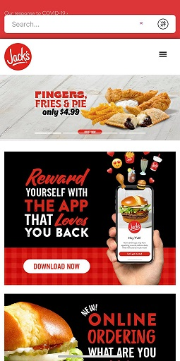

Reptition
Jack's Family Restraunts
www.eatatjacks.com Through out the Jack's website the repetition of colors red and white are used for everything from the headers to the logo to even the advertisements. It makes for a certain expection like they expect of their food quality.
Alignment
Google a website that follows a constant flow of reptition and alignment. They keep everything aligned and neat while repeating the pattern they have for displaying query returns, allowing for smooth and easy use.
Contrast
GitHub
www.github.comGithub a wonderful site I'm just beginning to learn, and its a pretty good representation of contrast. The contrast between the background and the sign up button allows it to pop out at new users. and as you go down it displays very different items that give visual appear to someone viewing it.